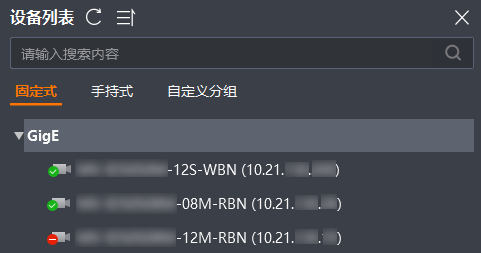
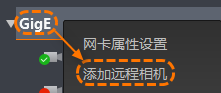
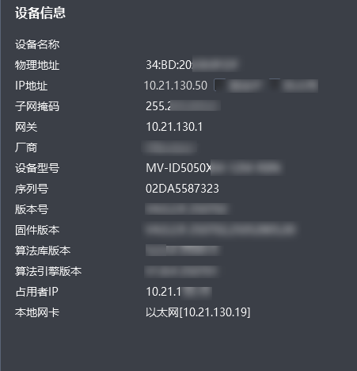

发现读码器
完成准备工作后，可通过“自动/手动刷新”或“远程添加”两种方式在设备列表发现读码器。前者适用于读码器和PC位于同一网段的场景，后者适用于读码器和PC不在同一网段但IP地址能ping通的场景。
IDMVS还支持连接虚拟读码器。虚拟读码器可在一定程度上替代真实硬件设备，帮助开发者在没有真实硬件的情况下进行调试。虚拟读码器的具体操作请见虚拟读码器。
发现读码器
以下主要介绍“自动/手动刷新”和“远程添加”2种操作方式。
- 自动/手动刷新读码器
-
-
自动刷新：启用下的设备列表自动更新参数后，客户端可每隔固定时间自动刷新局域网内的读码器。
说明默认每30秒自动刷新一次，可自行配置。具体操作请见通用。
-
手动刷新：单击设备列表顶部手动刷新读码器。

图 1 刷新读码器 -
- 远程添加读码器
-
“远程添加”可用于需远程统一管理和分析的读码场景。例如生产线分布在不同地点或环境复杂，且现场人工干预少，可远程添加并统一管理读码器。
操作步骤：
-
确保设备和PC的网络可以互相ping通。
-
在设备列表右键单击GigE，并选择添加远程相机，如下图所示。

图 2 添加远程相机 -
根据实际情况选择本地网卡，并输入读码器IP地址。
-
单击确定。
-
 手动刷新读码器。
手动刷新读码器。若无法发现读码器，可参考客户端无法发现读码器排查问题。
查看读码器状态&信息
发现读码器后，可在设备列表查看设备状态并判断是否可用。不同状态的读码器名称左侧图标有所区别，具体状态介绍请见下表。
|
图标 |
状态 |
含义 |
|---|---|---|
|
|
可用 |
读码器处于可连接状态，双击设备可以正常连接和使用。 |
|
|
已连接 |
客户端已经连接该读码器并可以进行相关操作。 |
|
采图 |
客户端已经连接该读码器并开始采集图像。 |
|
|
占用 |
该读码器当前被其他应用（包含IDMVS）连接。 |
|
|
|
不可达 |
该读码器在此局域网内不可达，需要修改IP地址到同一网段才能正常连接和使用设备。修改读码器IP地址的具体操作请见连接前配置。 |


此外，选中读码器后可在下方查看该设备的具体信息，如下图所示。

可通过右键单击复制单条设备信息。